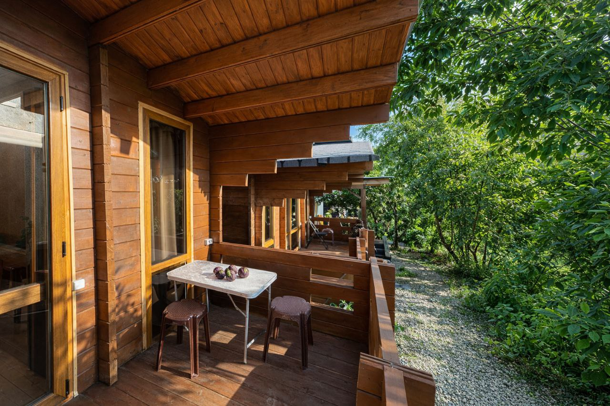
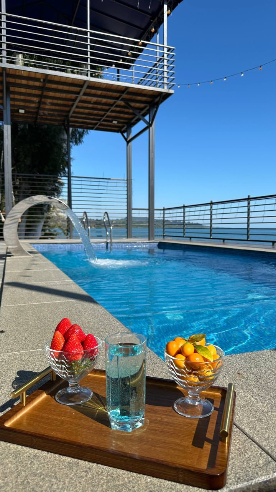
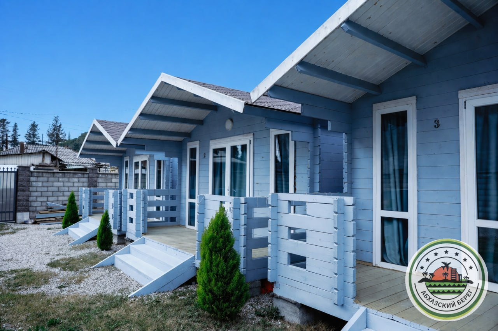
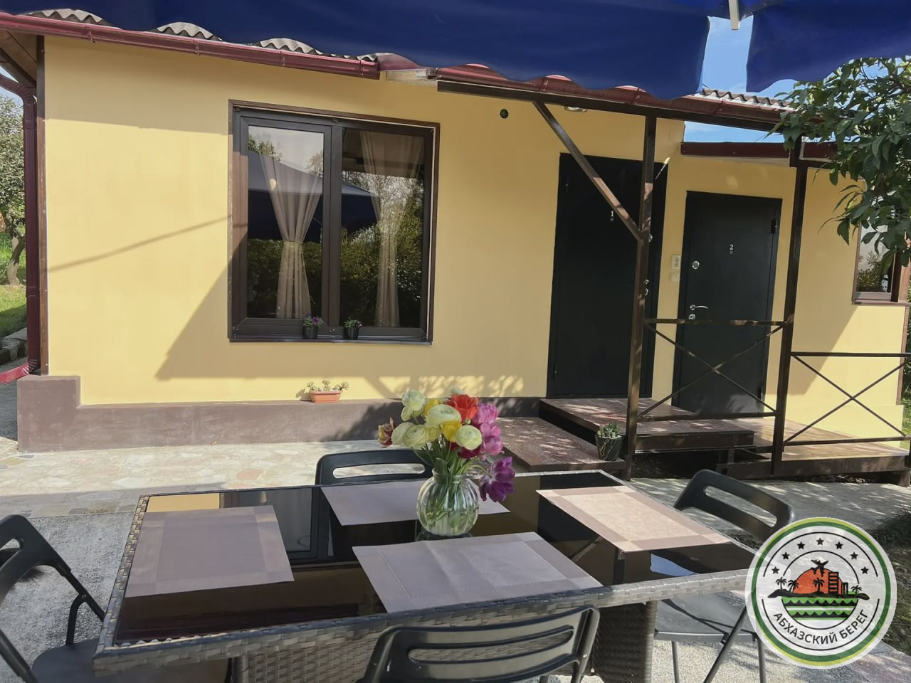
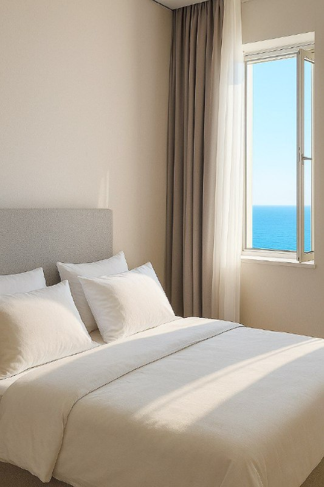
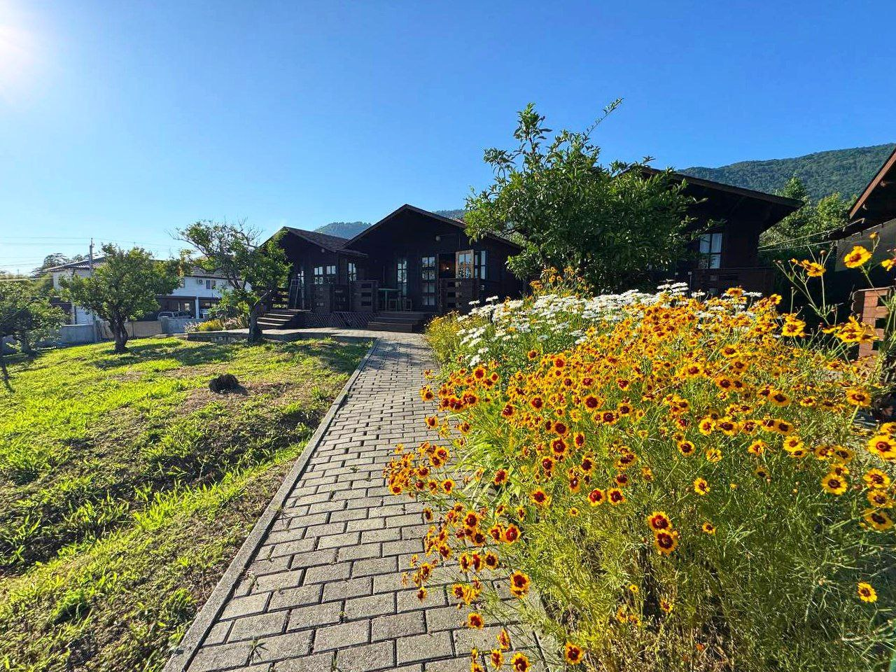
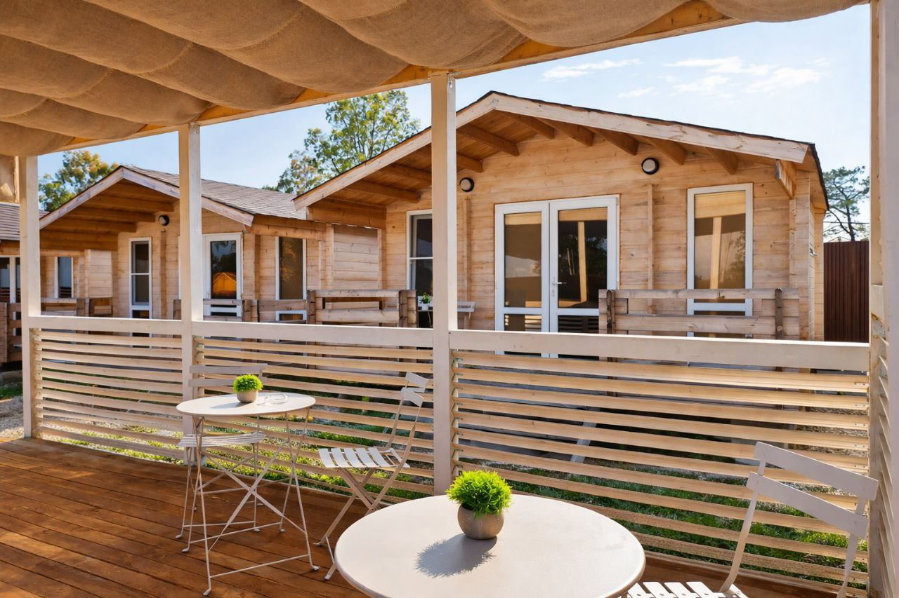
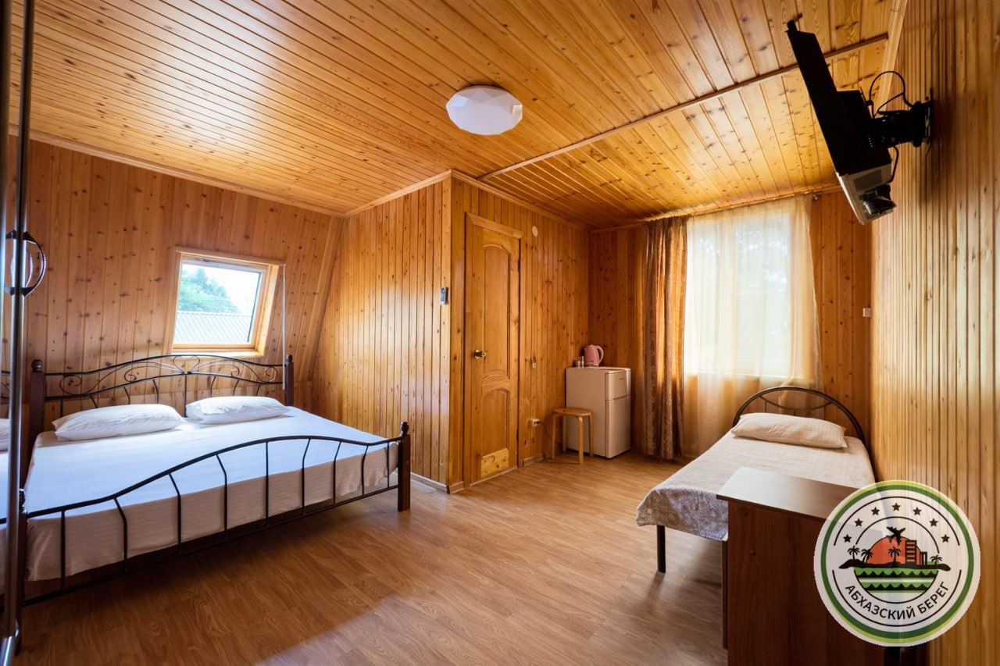

Варианты размещения в г. Новый Афон
1

"ДЕЛЬФИН" домики
🏖️ 4 мин до пляжа (галечно-песчаный)
2

"КАСТЛ" отель с теплым бассейном и видом на море
🏖️ 1 мин до пляжа (галечный)
3

"ЛЕМАР" домики в центре
🏖️ 7 мин до пляжа (галечный)
4

"МАНДАРИНОВЫЙ ДВОРИК" дом под ключ
🏖️пляж в 15 минутах пешком, галечный
5

"МАНОН" отель со сказочным видом
🏖️ 15 мин до пляжа (галечный)
6

"НИКОПСИЯ" домики
🏖️ 7 мин до пляжа (галечный)
7

"СИСАЙД" домики
🏖️ 1 мин до пляжа (галечный)
8

"ЦАРСКОЕ СЕЛО АНХУА" коттеджи
🏖️ 7 мин до пляжа (галечный)